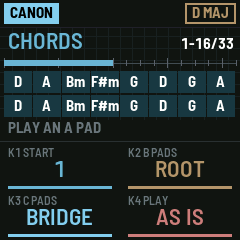
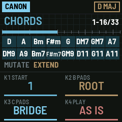
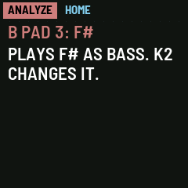
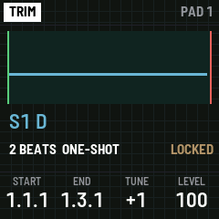
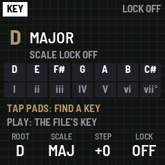
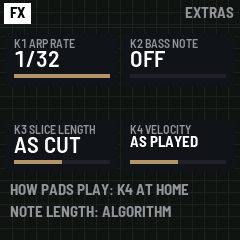
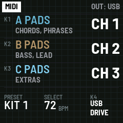

MPS-16 ver FM1
MPS-16 ver FM1 is a MIDI phrase sampler for the M-VAVE FM-1 by BeatSmith. Load a MIDI file and it's on 16 pads at once, cut into slices, in its own key: play its chords and phrases, play bass and lead over them, change key for a bridge, and send it all out as MIDI.
1Install
To try it first, open the emulator in a browser. It runs the same code, with sound.
To install it, use Chrome or Edge on a computer. Connect the FM-1 by USB, open the installer and press Install. Allow MIDI when the browser asks. Don't unplug the cable while it writes. From a terminal: python3 tools/fm1_install.py mps-16-VERSION.fwsc.
To go back to the stock firmware, use the installer's last section with M-VAVE's own firmware file. On its first start MPS-16 ver FM1 sets up its drive in the FM-1's spare flash.
2The pads: A, B and C
The FM-1's keys have names in MPS-16:
- A pads: the 16 white keys. The song's slices, chords and phrases.
- B pads: the first 7 black keys. The notes of your key: bass, lead, 3rds or 5ths.
- C pads: the last 4 black keys (C1 to C4). Key changes for a bridge, or extra chords and notes.
3Home

There's one home screen, and HOME always brings you back to it. Load a MIDI file and it's already on the 16 A pads, in the file's key: no slicing to do.
| Control | Turn it to choose |
|---|---|
| PRESET | How the song is cut: EQUAL (16 equal parts), BARS, 2 BARS, HITS (each new hit), CHORDS (each chord change, its name on the pad) |
| K1 START | Where in the song the 16 pads start: one slice a click |
| K2 B PADS | What the B pads play: ROOT (bass), LEAD, 3RD or 5TH |
| K3 C PADS | What the C pads do: BRIDGE (key changes), SUGGEST (4 chords that tend to follow the pad you played), OUTSIDE (4 notes off the scale, the bluest first), BORROW (4 chords from the parallel key) |
| K4 PLAY | How the pads play: AS IS (the slice as recorded), CHORD (the slice as one held chord), STRUM, ARP, SLOPPY (as recorded, humanized), or rhythms: STABS, OFFBT, 3-3-2, SYNC |
| SELECT | MUTATE (below) |
| ALGORITHM | The notes' length: left shorter (down to 10%, tight stabs), the middle as played, right longer (up to 450%, then LEGATO) |
Second jobs (hold an OCT button and turn): OCT- and K4: more of the way they play (a wider strum, 1 to 3 arp octaves, more humanize). OCT+ and K4: the voicing (ROOT POS, INV 1 to 3, WIDE, RANDOM). OCT- and SELECT: which chords mutate. OCT+ and SELECT: a new MIX roll. OCT- and OCT+ move the octave only when you let go, so holding one for a second job never moves it.
The screen shows how the song is cut and which slices are on the pads, the song as a ruler with that stretch marked, the 16 A pads with their chord names, the pad played last, and the four knobs.
Your pads: a pad you trim, or drop a slice or a LIB chord on, is locked: it stays yours while the rest follow the song (when you turn PRESET or K1, or load a file). A small amber corner marks it. TRIM's PRESET frees it again.
4MUTATE

A song repeats its chords, so its 16 pads do too. Turn SELECT: each repeat changes, one step further each time; the first time a chord comes it stays as the song has it. The pads show the new names.
| MUTATE | The 2nd, 3rd, 4th time a chord comes |
|---|---|
| OFF | As the song has it |
| EXTEND | Richer: 7, 9, 11, 13, in the key (DM7, A7, Bm7) |
| COLOR | sus4, sus2, add9, 6 |
| FLIP | Major and minor swap, then dim, then aug: out of the key on purpose |
| SUB | One note moves: the relative chord (D to Bm), the mediant (D to F#m), then its 7th |
| MIX | Any of them, any step; hold OCT+ and turn SELECT for a new roll |
Hold OCT- and turn SELECT: which chords mutate: EACH REPEAT, EVERY OTHER repeat, or ALL CHORDS (the first time too).
5The B and C pads
B pads (K2):
- ROOT: each plays a bass note under the pads. When a pad plays, the B pad of its chord's root lights up.
- LEAD: each plays a lead note over the pads. While a phrase plays, the B pads follow its melody: the note now is lit full, the next one breathes. Play along.
- 3RD, 5TH: each note with its 3rd or 5th in the key.
C pads with BRIDGE (K3): key changes, always from your home key.
| Pad | Goes to | From D major |
|---|---|---|
| C1 | Home: your key | D major |
| C2 | Up a 4th, the usual bridge | G major |
| C3 | The parallel key: same root, major and minor swapped | D minor |
| C4 | Up a step, the last-chorus lift | E major |
Tap one to go there: the whole song moves, the pads, the bass and the lead, each note degree for degree (on C3 a D chord becomes Dm and a Bm becomes Bb), and the pads show the new names. The C pad in use is lit, C1 when you're home. Tap C1 to come home. Hold one for a look first: the pads whose chords lead into it smoothly light up.
6Help: ANALYZE and GUIDE

ANALYZE: tap OCT- and OCT+ together. Now touch anything, a pad, a knob or a button: nothing plays or changes, and the screen says what it is right now and what it does ("A PAD 6: DM7", "B PAD 1: D, plays D as bass", "C3 PARALLEL: song and keys to D minor"). Tap OCT- and OCT+ together again, or HOME, to leave.

GUIDE: short pages, from playing pads to MIDI out. It opens by itself the first time; hold SYS for it any time. Turn SELECT for the next page; the buttons and pads a page talks about blink. HOME leaves.
7The tools: SLICE, TRIM, LIB, KEY, FX
Each tool opens from home with its button, and HOME brings you back.
SLICE (SEL): the song as a waveform with its slices. SELECT picks a slice and plays it; K1 the cut (the same as PRESET at home); K2, with HITS, how sure a hit must be; K3 and K4 move the slice's start and end by 16ths. An A pad takes it (and locks). SEL again opens FILES: SELECT picks the file, K1 a track, K2 turns it on or off.

TRIM (ENV): the A pad played last; an A pad there picks another. K1 START and K2 END (a phrase, by 16ths), K3 TUNE, K4 LEVEL, SELECT ONE-SHOT, GATE or LOOP. PRESET: LOCKED or FOLLOWS SONG. Trimming locks it. Nothing is cut away: you can always widen it again.
LIB (LFO): the chords and progressions of your key. K1 the chord type, K2 the progressions' rhythm, K3 chords or progressions, SELECT picks one and plays it, an A pad takes it. K4 builds a whole kit at once.

KEY (EDIT): K1 the root, K2 the scale, K3 the step shift, K4 the scale lock (every note snaps into the key; the step shift then moves every note by scale steps). PLAY finds the loaded file's key. FIND: tap a few pads on KEY: it lists every key that has all those notes, best first; SELECT picks one, K4 uses it and opens LIB. K1 takes back the last note, K2 clears them.

FX: the extras. K1 the arp's rate (with K4 PLAY on ARP), K2 a bass note under every chord, K3 the slice length (each slice x1/4 to x4 from its start), K4 the velocity curve (softer or harder).
8MIDI, kits and the USB drive

Tap SYS for the MIDI page:
- K1, K2, K3: the A, B and C pads' MIDI channels (1 to 16; at first 1, 2, 3). Every note goes out over USB on its group's channel, so your DAW or synths can give each group its own sound: your sample or keys on the A pads, your bass on the B pads. The FM-1's TRS jack is MIDI in only.
- PRESET: the kit, 1 to 8. A kit keeps your locked pads; the rest follow the song.
- SELECT: the tempo.
- K4 right: the USB drive. The FM-1 shows the computer a drive called MPS-16 (about 270 KB): copy
.midfiles on, then eject. No USB MIDI meanwhile; HOME leaves drive mode.
SAVE keeps the settings and the kit (KIT01.CSK to KIT08.CSK on the drive). REC records MIDI coming in (USB or the TRS jack); REC again saves it as RECnn.MID and opens it. MIDI in also plays the built-in synth, a simple twelve-voice sound for now. MASTER is the volume.
9All the controls
| Control | Does |
|---|---|
| A pads (white keys) | The song's slices and chords. In SLICE or LIB, take the pick |
| B pads (black keys 1-7) | Bass, lead, 3rds or 5ths in the key (K2) |
| C pads (last 4 black keys) | With BRIDGE: C2-C4 key changes, C1 home; or SUGGEST, OUTSIDE, BORROW (K3) |
| HOME | Home, from anywhere |
| SEL, ENV, LFO, EDIT, FX | The tools: SLICE, TRIM, LIB, KEY, FX |
| GLO (SYS) | The MIDI page (channels, kit, tempo, USB drive). Held: GUIDE |
| OCT- / OCT+ | The octave, when you let go. Held with a knob: its second job. Both tapped: ANALYZE |
| PRESET | Home: how the song is cut. TRIM: lock. MIDI page: the kit |
| ALGORITHM | The notes' length |
| SELECT | Home: MUTATE. In the tools: pick |
| K1 to K4 | What the screen says |
| SAVE | Keep the settings and the kit |
| PLAY | All notes off. In SLICE or LIB, hear the pick. In KEY, find the file's key |
| REC | Record MIDI coming in; again to stop and save it |
| ARP, SEQ | Free for now |
10Troubleshooting
If the installer doesn't find the FM-1, use Chrome or Edge, allow MIDI, and close other programs that use its MIDI port. If the FM-1 doesn't start after an install, it starts in SAFE MODE after two failed starts; USB still works, so the installer can reach it to install again or put the stock firmware back.
If a file doesn't show in FILES, it isn't a standard MIDI file, or it's too big (96 KB at most).